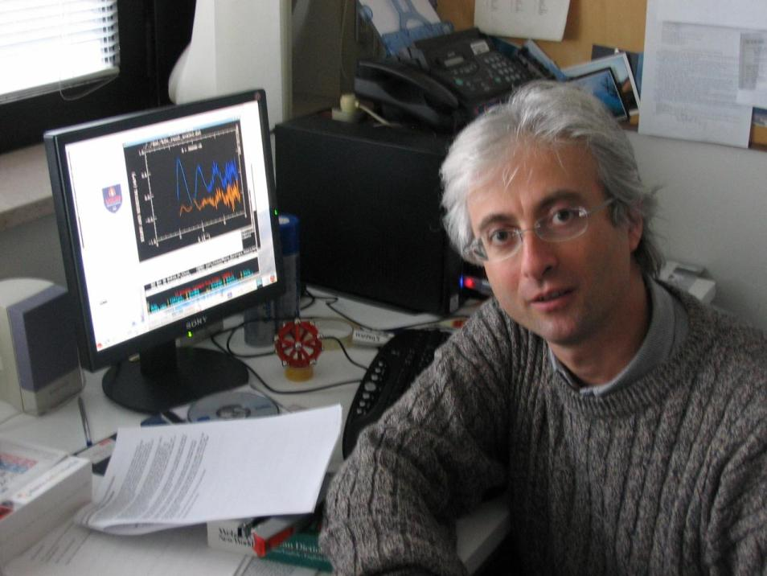

Full Professor · Condensed Matter Physics
Andrea
Di Cicco
X-ray absorption spectroscopy, synchrotron radiation and free-electron-laser science. Matter under extreme conditions and materials for energy applications. School of Science and Technology, University of Camerino, Italy.

Scientific activity
PhD in Physics (University of Rome “La Sapienza”, 1988–1991). Researcher (1990), Associate Professor (2000) and then Full Professor (2018) in Condensed Matter Physics. He has published, as main author or co-author, more than 250 papers in international journals (including conference proceedings), cited more than 10,000 times in the literature. He is included in the “Top Italian Scientists” list of the Virtual Italian Academy.
Invited speaker at several international conferences and referee for many scientific journals. Chairman of the XAFS14 and LAM14 international conferences, he is co-editor of three books of proceedings, one EPJ Special Topics issue and one book about GnXAS. He has been, several times, invited scientist at SSRL, ESRF and in Japan (Aichi, Toyama, Kumamoto), and invited professor at the University of Paris-Sud (XI), UPMC (Paris VI, international chair) and Rennes.
Past president of the Italian Synchrotron Radiation Society (SILS) and past chair of the International X-ray Absorption Society (IXAS). He has served on panels for scientific awards, for personnel selection in universities, INFM and CNR, and for project evaluation, both national and international (including ESF and NSF).
His main research activity concerns the development and execution of X-ray absorption, scattering and photoemission experiments at international synchrotron radiation facilities — PULS/PWA Frascati, LURE Orsay, SSRL Stanford, ESRF Grenoble, Elettra Trieste — and at free-electron lasers. In August 2015 he received the Outstanding Achievement Award (Stern Prize) of the International X-ray Absorption Society, and in September 2025 a career award from the Italian Synchrotron Radiation Society.
He coordinates the activity of the XAS group at Camerino and is co-author of the advanced GnXAS multiple-scattering data-analysis method, available to the scientific community through the GnXAS website. He was responsible for the TIMEX project for the exploitation of the FERMI@Elettra free-electron laser, and consultant (2007–2013) at the ELETTRA/FERMI facility (XAFS beamline and TIMEX).
He led the Italian unit of the European project SIRBATT on new materials for Li-ion batteries, and has taken part in several national research projects (PRIN). He coordinated (2017–2023) the PhD programmes in Physics, Earth and Materials Sciences at the University of Camerino, and was Head of the Physics Division (2015–2025).
Milestones
A selection of positions, projects and recognitions.
- 1987
Master degree in Physics
Thesis on the role of multiple scattering in the XANES spectra of silicon.
- 1988–91
PhD in Physics
University of Rome “La Sapienza” — a new analysis method for X-ray absorption spectroscopy.
- 1990
Researcher
Condensed Matter Physics, University of Camerino.
- 2000
Associate Professor
Condensed Matter Physics.
- 2007–13
Consultant at ELETTRA / FERMI
XAFS beamline and TIMEX free-electron-laser end-station.
- 2015
IXAS Outstanding Achievement Award
Stern Prize of the International X-ray Absorption Society, XAFS16, Karlsruhe.
- 2015–25
Head of the Physics Division
School of Science and Technology, University of Camerino.
- 2017–23
PhD Programme Coordinator
Physics, Earth and Materials Sciences.
- 2018
Full Professor
Condensed Matter Physics.
- 2025
SILS Career Award
Italian Synchrotron Radiation Society.
Scientific links
Research group, bibliometric profiles, curricula, awards, highlights and theses.
Profiles & group
- 01 Complete list of publicationsAll 306 papers and conference proceedings (1986–2026) with PDF reprints and DOIs.
- 02 Camerino XAS groupHome page of the research group and the GnXAS data-analysis package.
- 03 Google ScholarUpdated publication list and citation metrics.
- 04 ResearchGatePersonal research profile.
- 05 Teaching activityCourses and teaching material (Italian / English).
Curriculum vitae
- 06 One-page CVShort curriculum vitae, June 2025.
- 07 Extended CV — EnglishFull curriculum vitae, 2021.
- 08 Extended CV — ItalianoCurriculum vitae completo, 2021.
Awards & highlights
- 09 IXAS Outstanding Achievement AwardStern Prize, International X-ray Absorption Society — August 2015.
- 10 SILS PrizeCareer award by the Italian Synchrotron Radiation Society — September 2025.
- 11 Research highlightsSelected results of the Camerino XAS group.
- 12 APS Physics FocusFeatured story by the American Physical Society.
- 13 Italian press coverageNewspapers and magazines.
- 14 “60 seconds with…” — IoP interviewInstitute of Physics, Authors Edition — February 2006.
Theses
- 15 PhD thesis (1991)“La spettroscopia di assorbimento di raggi X: sviluppo di un nuovo metodo di analisi e applicazioni” — in Italian.
- 16 Master thesis (1987)“Role of multiple scattering in the XANES spectra of silicon” — in Italian.
Funding. The research activity has been supported by MIUR (also through the University of Camerino), the European Union (SIRBATT), and the ELETTRA and SOLEIL synchrotrons.
All articles
More than 250 publications in international journals and conference proceedings.
Full publication list
The complete, searchable chronological list of publications (1986–2026) with PDF reprints and DOI links.
Open list CitationsGoogle Scholar profile
Automatically updated records, citation counts and h-index.
View profile MethodGnXAS
Advanced multiple-scattering data analysis for X-ray absorption spectroscopy.
Visit websitePersonal links
Family, music and early writings.
Family & music
- 01 My father’s home pageMemorial — English and Italian.
- 02 My mother’s home pageIn Italian.
- 03 My musicIn English.
- 04 Musiche per il teatroRome, 1979/1980.
- 05 Natale a casa Di Cicco, 1972…Family voices.
Early writings
- 06 High-school thesis (1981)“The beginning of our century: the progress in physical sciences due to quantum mechanics during the first 30 years of the 20th century” — in Italian.
- 07 High-school group work (1977)“City planning of Rome from 1870 to 1970” — in Italian.
- 08 Middle-school thesis (1976)“Il futurismo” — in Italian.
- 09 Protesta contro i provvedimenti legislativi 2005Su Università ed Enti di Ricerca — in Italian.
Get in touch
| Address | Sezione di Fisica Scuola di Scienze e Tecnologie Università di Camerino Via Madonna delle Carceri 9 62032 Camerino (MC), Italy |
|---|---|
| Office | +39 0737 402535 |
| Laboratory | +39 0737 402550 |
| Map | Open in Google Maps |